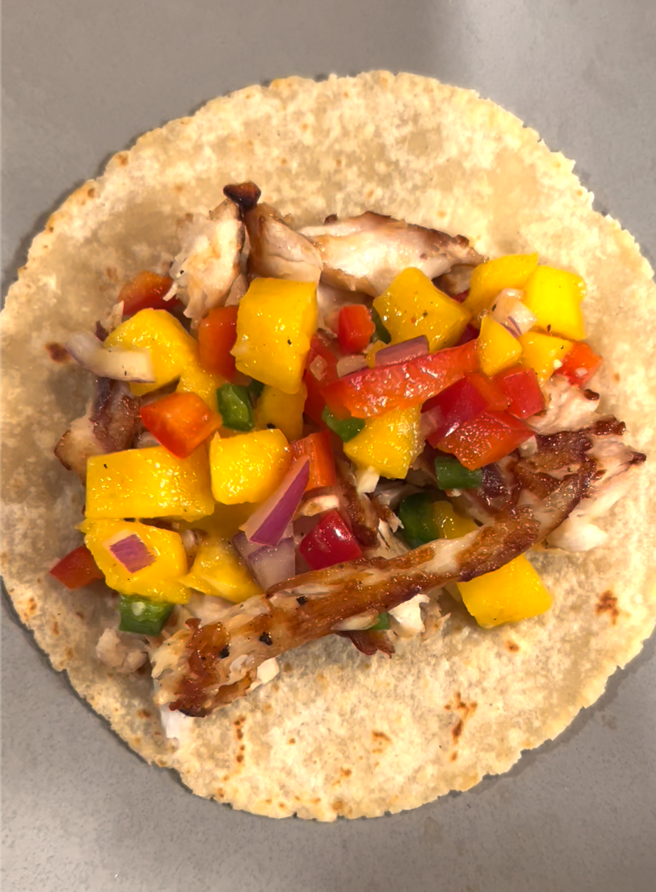

Rockfish Tacos with Mango Salsa

Did someone say tacos?
Summer is here and it is time to enjoy all of the tasty food that comes with it.
Check out these rockfish tacos served on white corn tortillas and topped with
chunky mango salsa.
These tacos will have your mouth watering and pair well with a spicy jalapeno
margartia!
Ingredients
- 1 lb Rockfish (remove the bones)
- 16 White Corn Tortillas
- 1 Mango - cubed
- 2 Jalapenos - diced
- 1-2 TBSP cilantro
- 1 Red Bell Pepper - diced
- 1 Avacoado
- 2-3 Limes
- 1 TBSP Butter
- 1-2 TSP Minced Garlice
- Salt and Pepper to taste
Steps
- In a large sauce pan, heat up the butter and garlic until the butter
is melted. Add in the fish. Every 1-2 minutes, flip the fish and begin
to break it up. Once cooked, add in salt and pepper to taste.
- While the fish is cooking, dice up the Jalapenos, Bell pepper, and
cilantro. Place in a small to medium sized bowl. Cube the mango and
addd to the bowl. Mixed in the diced avacado and juice from 1 lime.
- Heat up the tortillas over an open flame
- Serve the tacos face open with the fish topped with the mango salsa. Enjoy!